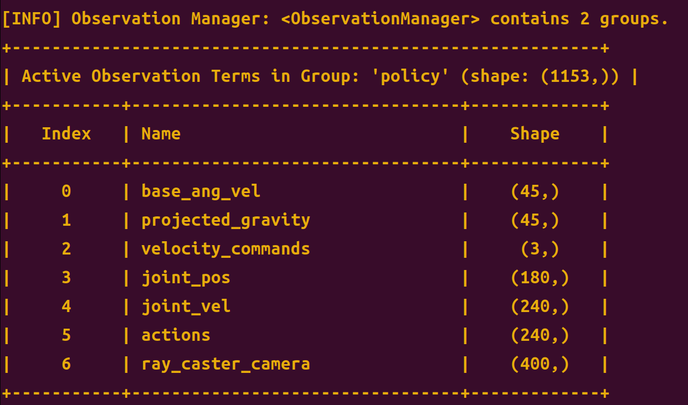
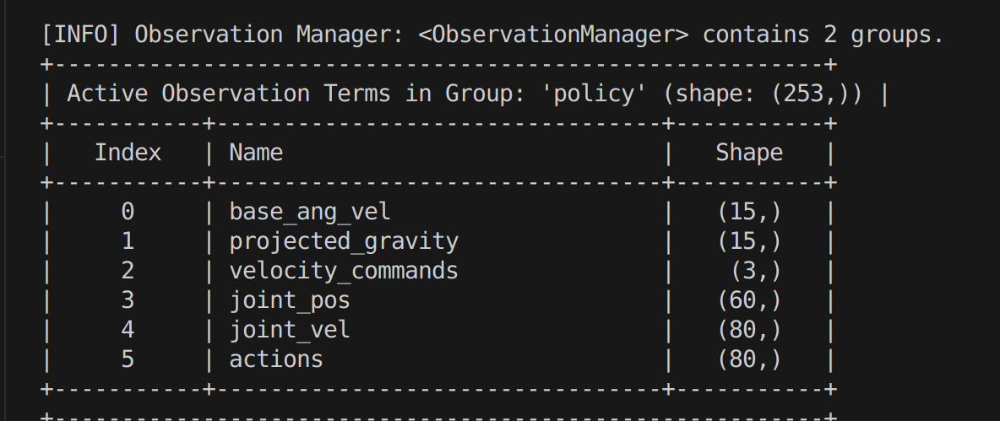

Command
Set forward, lateral, and yaw command values from the browser. The controls mirror `w/s`, `a/d`, `q/e`, and zero-command behavior.

MuJoCo browser demo
A GitHub Pages demo for the Go2W `lab2mj` path: MuJoCo WASM renders the MJCF scene, computes RayCasterCamera depth, and runs ONNX policies in the browser.
The static site is designed for GitHub Pages. It loads the Go2W MJCF scene, mesh assets, MuJoCo WASM runtime, and ONNX checkpoints directly in the browser, then exposes a `lab2mj`-style velocity command surface.
The demo mirrors the `lab2mj` scene layout with static assets under `docs/demo-assets`. It runs MuJoCo stepping and ONNX inference in the browser and does not require a local simulator process.
docs/demo-assets/scenes/scene_parkour.xml
docs/demo-assets/scenes/go2w.xml
docs/demo-assets/scenes/assets/
Set forward, lateral, and yaw command values from the browser. The controls mirror `w/s`, `a/d`, `q/e`, and zero-command behavior.
`motion_mlp`, `vtm`, `vtm_lstm_sru`, and `vtm_gru_sru` run online through ONNX Runtime Web. The visual policies use a browser RayCasterCamera depth image and recurrent state reset support.
Reset the simulation, zero commands, and adjust realtime factor without leaving the GitHub Pages demo.
Configure the repository Pages source to `main` and `/docs`. The demo is static, so GitHub Pages only needs the files in this directory.
git add docs README.md
git commit -m "Add Go2W GitHub Pages demo"
git push origin main